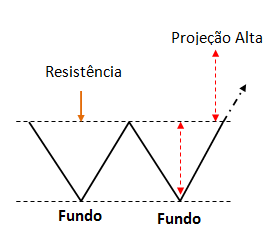

Análise Técnica
A Análise Técnica, também conhecida como Análise Gráfica, é uma ferramenta poderosa para encontrar oportunidades no Day Trade.
1. Básico (Candles, Topos e Fundos, Suportes/Resistências)
2. Candles de Reversão
3. Candles de Força
4. Índice de Força Relativa (IFR)
5. Bandas de Bollinger
6. Pullback e Throwback
7. Padrões de Candles
8. Padrões gráficos de reversão
9. Padrões gráficos de continuidade
1. Básico da Análise Técnica
1.1 Candles
Cada candle representa a variação dos preços de um papel em um determinado período de tempo.
Eles podem representar minutos, horas, dias, semanas, meses, anos. Por exemplo, em um gráfico de 5 minutos, cada candle corresponde a variação do preço no intervalo de 5 minutos.


1.2 Topos e Fundos
O preço se move em zigue-zague no gráfico, subindo e descendo, formando assim topos e fundos.
Os topos e fundos na análise gráfica nos mostra a tendência principal de um papel.
Para ocorrer uma tendência de alta, é necessário que se formem topos e fundos cada vez mais altos.
Por outro lado, para ocorrer uma tendência de baixa, é necessário que se formem topos e fundos mais baixos.

1.3 Suportes e Resistências
Os Suportes são níveis de preço onde os papéis tendem a parar de cair e voltar a subir, gerando uma oportunidade de compra.
As Resistências são níveis de preço onde os papéis pararam de subir e voltaram a cair. Quanto mais vezes o preço do papel subir e cair nessa região mais consistente será a resistência. Oportunidade de venda na resistência.

2. Candles de Reversão
Os candles de reversão nos indica que um preço que estava caindo pode voltar a subir, ou que um preço que estava subindo pode voltar a cair.
O candle de reversão para alta tem como característica principal um pavio inferior longo abaixo do candle.
Isso indica que no período de movimentação do candle houve muito interesse comprador durante a queda, e em algum momento a força compradora voltou a se tornar preponderante,fazendo os preços retomarem.
O candle de reversão para baixa indica que um preço que estava subindo pode voltar a cair devido à reentrada da pressão vendedora.
A característica principal do candle de reversão para baixa é um pavio superior longo. Isso revela que depois de alcançada a máxima no preço, a força vendedora naquele nível de preço fez com que se retomasse a queda.

3. Candles de Força (CF)
O Candle de força (CF) mostra a intensidade e o direcionamento da movimento que está em curso. São dois tipos de candle de força: de alta e de baixa.
O candle de força de alta indica a continuidade do movimento de alta anterior. Uma característica dele é o fechamento próximo da máxima, que mostra o mercado confiante na continuidade do movimento de alta.
O candle de força de baixa mostra que um mercado que estava caindo tem grandes chances de continuar o movimento de queda.

4. Índice de Força relativa (IFR/RSI)
O IFR (Índice de Força Relativa) é um indicador que mede o fôlego do mercado. O preço dos papéis nunca irão subir ou descer sem parar. O preço em algum momento vai perder a sua força antes de continuar sua tendência principal.
Quando a linha está próxima do limite superior, isso mostra que a força compradora está perdendo o fôlego e provavelmente o mercado pode começar a cair no curto prazo antes de continuar subindo, uma oportunidade de venda.
Se essa linha chega próximo do limite inferior, isso mostra que a força vendedora está perdendo o fôlego e provavelmente o mercado pode começar a subir no curto prazo antes de continuar caindo, gerando oportunidade de compra.
5. Bandas de Bollinger
As bandas de bollinger são derivadas das médias móveis, muito utilizadas como indicador de volatilidade no curto prazo e informam momentos favoráveis para compra e venda.
Os preços dos papéis costumam variar dentro de um padrão, e independente do movimento do preço, ele tende a voltar a um equilíbrio (estreitamento das bandas),e quanto maior a variação do preço, mais afastadas estarão as bandas, indicando também maior volatilidade.
Devem ser utilizadas em conjunto com outros indicadores complementares como Volume ou Índice de Força Relativa (IFR).
Uma das várias formas de usar Bandas de Bollinger é na abertura das bandas junto com padrão de candle para confirmar rompimentos após uma consolidação.
6. Pullback e Throwback
O termo Pullback se refere aos recuos que interrompem momentaneamente uma tendência, se apoiando em níveis de suporte que já foram superados.
Os traders costumam utilizar o termo Pullback para qualquer retração que é apoiada por um suporte ou resistência para continuar a tendência, no entanto o Pullback deve ser aplicado apenas em tendências de baixa .
Os recuos nas tendências de alta se chama Throwback.

7. Padrões de Candles
O gráfico sempre repete padrões de candles, e reconhecer esses padrões é uma forma de antecipar movimentos para gerar ganhos.
7.1 Harami
O harami é um conhecido padrão de reversão que aprenseta um alto índice de acerto. Ele costuma aparecer após uma tendência definida.
7.2 Estrela da Manhã – Estrela da Noite
Depois de uma tendência, surge um candle grande com pouco ou nenhum pavio. Após esse candle, o preço forma um pequeno doji com pavios medianos. Em seguida, o preço desenha um candle grande com pouco ou nenhum pavio no sentido oposto à tendência anterior, caracterizando uma reversão bastante provável.
7.3 Engolfo
É um padrão de reversão no final de tendências e pode ser de alta ou de baixa. Recebe esse nome porque o candle posterior engolfa o candle anterior.
O candle menor (primeiro) deva estar contido integralmente dentro do candle maior (o segundo).
8. Padrões gráficos de reversão
Os padrões gráficos são figuras formadas por um conjunto de candles e existem várias delas, mas vamos apresentar as que trazem mais resultados.
8.1 Ombro, Cabeça, Ombro (OCO)
Esse padrão aparece em qualquer tempo gráfico, é um padrão clássico de reversão de uma tendência de alta
O padrão sinaliza que o papel tem grande chance de fazer um movimento descendente, especialmente depois de cair abaixo da linha de pescoço.
Para o padrão de cabeça e ombros o volume deve ser utilizado como complemento, principalmente no ponto de rompimento da linha do pescoço para ajudar a confirmar o padrão.
Nem sempre o padrão cabeça e ombros tem a linha do pescoço reta, e geralmente ela poderá ser inclinada para cima.
8.2 Ombro, Cabeça, Ombro invertido (OCOi)
O padrão de cabeça e ombros invertido é o contrário da cabeça e ombros tradicional, e sinaliza uma reversão do movimento de baixa após o rompimento da linha do pescoço. A linha do pescoço pode ser reta ou inclinada para baixo.
8.3 Topo duplo
Topo duplo é uma figura de reversão que sinaliza a mudança de uma tendência de alta para baixa.
Geralmente o topo duplo é formado por dois topos separados por um fundo. Esse padrão tem uma forma que se assemelha à letra M.
8.4 Fundo duplo
Fundo duplo é uma figura de reversão que sinaliza a mudança de uma tendência de baixa para alta.
Geralmente o fundo duplo é formado por dois fundos separados por um topo. Esse padrão tem uma forma que se assemelha à letra W.
